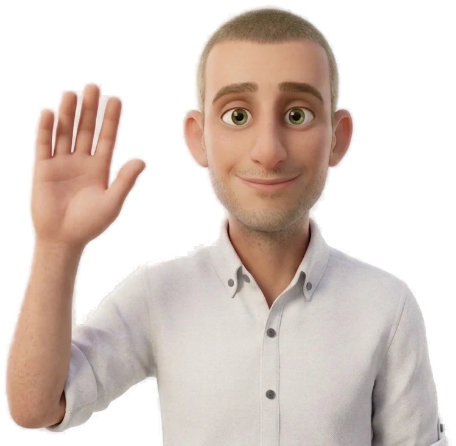
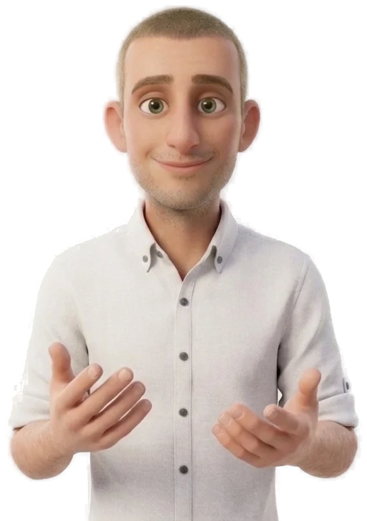

شرح مبسّط لكل درس من أولى ابتدائي إلى تالتة إعدادي.

اختر المرحلة أولًا، ثم اختر صفك، وستظهر لك دروس صفك وحدها

مدرس لغة عربية يشرح كل درس بقصة ولعبة ومثال من يومهم، من أولى ابتدائي إلى تالتة إعدادي.
تصفّح الصفوفمتابعة هادئة دون أن تحتاج إلى الوقوف بجانب ابنك